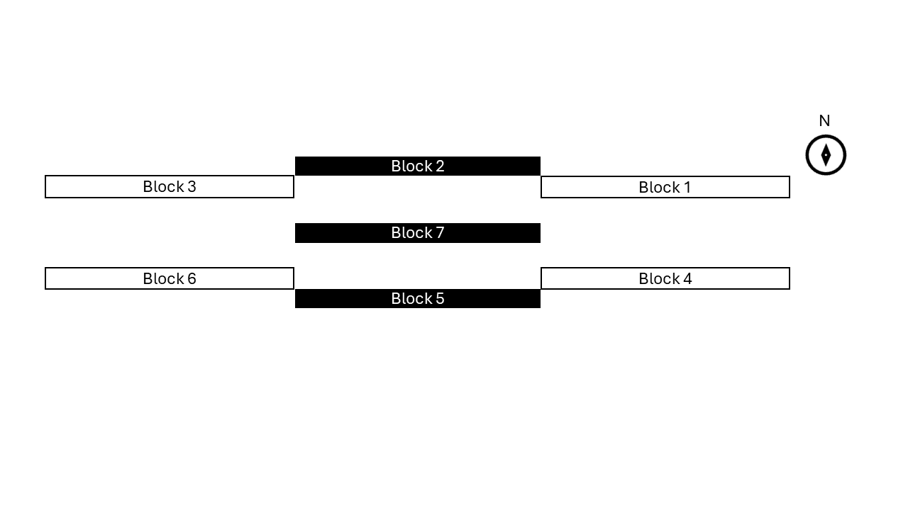
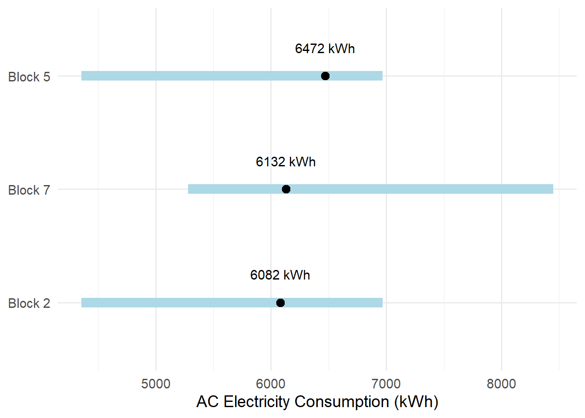
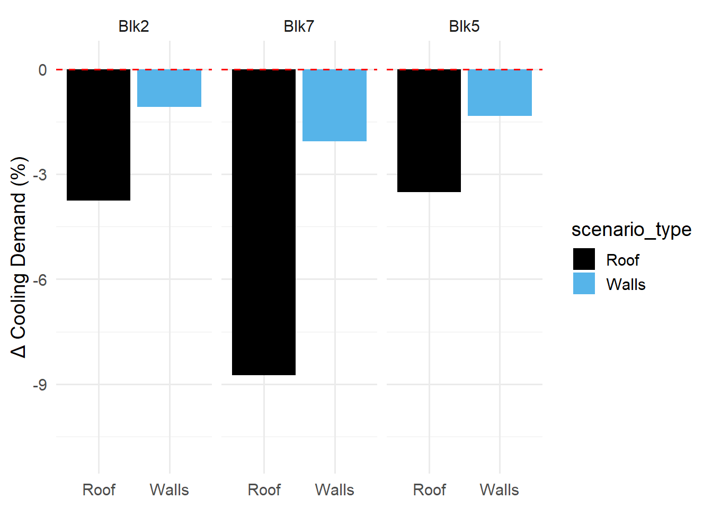

![]()
| Discipline | Energy retrofit measure | Building component |
|---|---|---|
| Design | Overhang shading | Windows |
| Material | High reflectance coating | Walls, Roof |
| Nature | Roof vegetation | Roof |
Cooling Demand Reduction through Passive Facade Retrofits: A Multi-Building Case Study in Singapore
Abstract
Reducing cooling energy demand in tropical residential buildings presents a growing challenge due to high solar radiation, temperatures, and humidity. Passive energy retrofit measures (ERMs) offer a promising pathway to reduce cooling loads by limiting external heat gains through building design and envelope modifications. This study evaluates the cooling demand reduction potential of three passive ERMs applied to a multi-building residential complex in Singapore. The passive ERMs chosen each come from one of the following categories: material-based, design-based, and nature-based solutions. Using EnergyPlus, a physics based building modelling software, three high-rise residential blocks were modeled under identical microclimate weather conditions to assess both retrofit effectiveness and robustness across buildings. Results indicate that high-reflectance cool coatings applied to the building envelope provide the greatest cooling demand reduction, followed by roof vegetation, while window overhang shading yields minimal savings due to existing climate-sensitive building design. Although absolute cooling energy savings vary between blocks, the relative performance ranking of the retrofit measures remains consistent, suggesting that observed trends are driven by retrofit strategy effectiveness within the site and climatic context rather than block-specific characteristics. The category-based evaluation framework and multi-building comparison approach presented in this study can be scaled and used in strategic passive retrofit planning for tropical residential developments.
Introduction
The building sector currently comprises about 40% of worldwide energy consumption [1]. With the rise of urbanization, climate change, and anthropogenic heat emissions, the need to improve energy efficiency and decrease energy consumption in the existing built environment is vital [2]. Tropical regions, especially, face a challenge in cooling energy demand due to the large amounts of solar radiation, high temperatures, and high humidity [3]. Building energy retrofit measures (ERMs) pose a possible solution and involve upgrades or renovations to existing buildings intended to improve energy performance [1]. In tropical climates, building energy retrofit studies have demonstrated monthly energy savings ranging from ~5-12% , supporting ERMs as an effective strategy for cooling-dominated regions [4].
Among energy retrofit measures, passive measures target reductions in solar and external heat gains through building physics and design to lower cooling loads [5]. In this study, passive retrofit measures are grouped into (i) design-based (geometry, orientation, shading) [6], (ii) material-based (envelope properties such as insulation and reflectance) [7] and (iii) nature-based solutions (green roofs/walls and vegetation) [8]. These categories encapsulate the most commonly applied passive restrofit measures [9] and allow a deeper investigation into which category is the most effective for a given climatic region.
This research evaluates one passive ERM from each category to compare their relative effectiveness at the scale of a multi-building residential complex. Although passive ERMs have been widely researched, studies often focus on single-building retrofits [10], which can limit how well findings transfer to larger scales such as residential complexes. Recent work highlights the need for research in multi-building retrofits to determine strategic approaches for implementing retrofits at larger scales [11]. This study aims to bridge this gap by comparing the performance of passive ERMs across multiple blocks in the same residential complex using identical modelling conditions, enabling an assessment of both their effectiveness and the robustness of the resulting energy savings. The objectives of this report are as follows:
- To compare the cooling energy impacts of representative passive energy retrofit measures from design-, material-, and nature-based categories.
- To evaluate the robustness of cooling energy impacts across multiple residential blocks within the same complex.
Methodology
Target buildings and simulation setup
Everton Park, a typical high-rise, public residential complex in Singapore, was selected for this study. The complex consists of seven, 12-story-high buildings facing north or south, in the configuration shown in Figure 1. Buildings of interest in this study are the central building, block 7, and the buildings directly north and south of it, blocks 2 and 5, respectively. In contrast to single-building studies, evaluating multiple blocks allows for a more robust simulation of energy retrofit measures (ERMs), as they will be applied to buildings with different relative positions, solar exposure, and boundary conditions.

Energy consumption in each building was modeled using EnergyPlus, a widely-used physics based building energy modelling program [10]. Baseline building geometries were derived from previously developed 3D models reported by Xu et al. [12]. All parameters relevant to replicating the models, including floor plans, zoning, construction materials, air-conditioning settings, and schedules can be referenced in their work. The weather file used in all simulations was based on the microclimate dataset developed and validated by Xu. et al. [12], which performed better than historical or measured weather datasets for building energy modelling. It is important to note that all three building models share identical schedules and internal loads and only differ in apartment composition, facade geometry, and relative site placement.
Energy consumption due to air-conditioning is the main target area for this analysis. To represent this as an output meter in EnergyPlus, Cooling:EnergyTransfer was selected. This output meter represents how much cooling energy the building needs to maintain comfort. It does this by measuring how much heat must be removed from all zones to maintain temperature setpoints. Using this output metric, the percentage reduction in cooling demand \(p\) between baseline cases and retrofit cases was calculated using Equation 1. The percentage reduction was then categorized based on magnitude. The categories include high impact (\(p>5\)), moderate impact (\(3<p\le5\)), low impact (\(0.1<p\le3\)), and insignificant (\(p\le0.1\))
\[ p = \frac{E_{retrofit} - E_{baseline}}{E_{baseline}} * 100 \tag{1}\]
Selection of energy retrofit measures
Table 1 lists the chosen ERMs as well as the building component they correspond to, namely, windows, exterior walls, and exterior roof. ERMs applied to the facade windows and walls were simulated individually by adding and/or adjusting one component in the model. Next, selected window- or wall- based ERMs were combined with a roof ERM to evaluate the maximal possible energy savings for each block.
Baseline case simulation and verification
To determine a baseline cooling demand for each block, the existing building models were simulated with the developed microclimate weather dataset. All simulation parameters are consistent with those used by Xu. et al., with important parameters presented in Table 2.
| Parameter | Value |
|---|---|
| Simulation period | June 2015 |
| Days considered | Weekdays |
| Reporting frequency | Daily |
| Coefficient of performace (COP) | 3 |
The Cooling:EnergyTransfer output meter returns a thermal energy (heat removed from the zone). To calculate electricity used for cooling, Equation 2 was applied. Where \(E_{el}\) represents the electricity input to the AC unit, \(Q_{cool}\) is the heat removed from the zone for cooling, and \(COP\) is the coefficient of performance. \[E_{\mathrm{el}} \;[\mathrm{kWh_{el}}]=\frac{Q_{\mathrm{cool}} \;[\mathrm{kWh_{th}}]}{\mathrm{COP}} \tag{2}\]
To validate the simulated baseline values, published data from the Energy Market Authority and National Environment Agency in Singapore were used, including public housing monthly electricity consumption [13] and percentage of household electricity used for air-conditioning [14]. All data was based on records from 2018-2019, as these datasets were the closest publicly available data to the 2015 simulation period. For monthly electricity consumption, a range was selected to encompass both conservative and high electricity use per household: 250-400 kWh. For percentage of electricity used by AC, 24% was selected.
Equation 3 was applied to calculate upper and lower bounds for the monthly AC electricity consumption of each building. Variables include: \(w\) , the fraction of weekdays in a typical month, accounting for weekday-only occupancy patterns assumed in the simulations, \(p_{AC}\) , the percentage of total monthly electricity consumption per household used for cooling, \(E_{tot}\) , the total monthly electricity consumption per household, and \(N_{flats}\) , the total number of flats in each residential building.
\[ \ E_{AC} = w * p_{AC} * E_{tot} * N_{flats} \tag{3}\]
Figure 2 shows the range of reference values calculated and where each baseline model falls within the range. All baseline values were found to fall within benchmark ranges.

Detailed Model Parameters and Results
Shading
Solar shading devices play an important role in building energy and thermal behavior. In hot and humid climates like Singapore, shading can prevent excessive solar gain, lowering cooling demand. When implementing solar shading on windows, it is important to consider both solar radiation regulation and satisfactory levels of natural light and visibility to the outdoors [6]. While many residential buildings make use of internal shading devices, external devices are more effective in reducing cooling loads because they can intercept and reduce solar radiation before it reaches the glass panes [15]. External shading devices, such as overhangs, side fins, and canopies, are therefore good choices for energy retrofit [6].
For this study, horizontal overhangs on windows were chosen as the retrofit measure, which corresponds to the EnergyPlus input Shading:Overhang:Projection. Overhang depths were varied as a fraction of the window height including values of: 0.25, 0.50, 0.75, and 1.00. Windows in this model are only on the north and south facing facades. To test differences in response of the north and south facing facades, overhangs were applied on each facade individually, then on both. Since overhangs were not a part of the baseline model, a placeholder overhang was created on each window to enable parametric variation.
Figure 3 shows the results for the overhang shading parametric analysis for north facing windows, south facing windows, and all windows for each block. The results indicate that, in most cases, increasing overhang depth produced a small reduction in cooling electricity (max -0.075%). One outlier (Block 7, south facing windows) showed a marginal increase (max +0.025%) in electricity which can likely be atrributed to sensitivity to timestep resolution or minor shading geometry effects rather than a meaningful physical impact. The results for all overhang shading cases show less than a 0.1% reduction in energy and thus fall within the insignificant category and were not included in comparative analysis with other retrofits.
Shading likely did not have an effect on the overall cooling energy demand due to the climate sensitive design of the buildings. The buildings all have a north-south orientation with no windows on the east and west facing facades, strategies to minimize solar heat gains in Singapore [16]. Since the sun is almost directly overhead during June in Singapore, windows on the north and south facades get very little sun exposure, thus the shading had a limited effect. Also, the baseline models consider both corridor and inter-building shading [12] which may already provide sufficient shading on the north and south facades.

Coating
Reflective or cool materials are considered an effective method for decreasing building thermal loads [17]. Light color coatings, for example, can be applied to any building surface to increase albedo, the fraction of sunlight reflected by a surface. Increased solar reflectance of the building envelope reduces solar heat gains, which can reduce cooling demand.
To implement cool coatings in the models, solar absorptances of the exterior walls and roof materials were varied from a range of dark to cool, including values: 0.7, 0.5, 0.4, 0.3, and 0.2. These values represent typical dark to cool coatings reported in the literature [17]. The coatings were applied to the facade walls systematically to identify if any wall had a larger response. The general methodology in EnergyPlus was as follows: a new material was created with the desired solar absorptance, followed by a new construction of the exterior wall and/or roof, and finally, the new construction was applied to the desired facade.
Figure 4 shows the results for parametric analysis of cool coatings on each facade wall. The results indicate that as solar absorptance decreases, the percent reduction in cooling demand increases, with the maximum savings around 0.6%. Additionally, the facade walls all demonstrate a similar, limited, response with less than a 1% reduction in cooling demand. The low percentage change, while slightly higher than the shading results, can be attributed to similar physical factors: lower incident solar radiation compared to the roof, mutual shading, and building orientation. For the remaining retrofit scenarios, a solar absorptance of 0.2 was adopted.

To identify response differences to coatings on the facade walls and roof, the cool coating (absorptance 0.2) was applied to all facade walls and then to only the roof. The results are displayed in Figure 5.

The data shows that coatings on the roof have a much larger impact than coatings on the exterior walls. For example, block 5 showed 1.34% savings due to exterior wall coatings compared to 3.5% savings due to roof coating. This is expected as the roof is far more sun exposed due to Singapore’s sun path, thus the cool coatings have a larger effect. In both cases, blocks 2 and 5 demonstrate a similar percentage cooling savings, while block 7 performs best. Since the simulations were run under identical climatic and modelling conditions, this difference in response is likely due to building geometry. A more in depth analysis is needed to verify the cause of block 7’s higher cooling energy savings.
Green roof
Green roofs (GRs) are a form of urban greenery that is beneficial in reducing a building’s heat gain and energy consumption [16]. They can help provide thermal insulation to the interior spaces below it, maximizing indoor thermal comfort and minimizing cooling needs [18]. The benefits of GRs can be explained through four main mechanisms including: insulation, evapotranspiration, shading, and wind barrier effect [19].
EnergyPlus utilizes a built-in module to simulate GRs, based on a heat balance principle between the soil layer and vegetation layer [20]. The module accounts for sensible heat flux, latent heat flux, and long- and short-wave radiation. For simplicity in the simulations, irrigation systems for the GRs were not included. Thus, soil moisture is driven only by precipitation. This likely limits evapotransporation and leads to a conservative estimate for the cooling energy demand reduction via GRs.
To add a GR to the baseline model, a new vegetation material was created, followed by a new construction. The new construction was then applied to the exterior roof, following a similar setup to the cool coatings. For this study, only the leaf area index (LAI) and plant height were varied between cases. All other parameters related to the vegetation material, such as substrate thickness and soil conductivity, were set to the default EnergyPlus values. Two cases of GRs were simulated with details presented in Table 3. The two cases represent a green roof with grass, which covers the roof more extensively (higher LAI) but has a shorter plant height, and shrubs, which cover less of the roof area (lower LAI) and have a higher plant height.
| Parameter | Grass | Shrubs | Source |
|---|---|---|---|
| Height of plants (m) | 0.15 | 1.00 | Parametric variable |
| Leaf area index (LAI) | 3.00 | 1.50 | Parametric variable |
| Leaf reflectivity | 0.20 | 0.20 | Default |
| Leaf emissivity | 0.95 | 0.95 | Default |
| Minimum stomatal resistance (s/m) | 180.00 | 180.00 | Default |
| Substrate thickness (m) | 0.10 | 0.10 | Default |
| Conductivity of dry soil (W/m·K) | 0.35 | 0.35 | Default |
| Thermal absorptance | 0.90 | 0.90 | Default |
All green roof cases include coated exterior walls (absorptance 0.2) for simulation. Figure 6 shows a comparison between the grass roof, shrub roof, and coated roof. Both GR cases performed similarly across all blocks, with around 3-4% cooling energy savings, and grass demonstrating slightly better savings than shrubs. When comparing the GRs to the coated roof, the coated roof showed more energy savings across all blocks (~5-10%). This suggests that, under Singapore’s hot and humid climate, direct reduction of solar heat absorption through increased reflectance is more effective at lowering cooling demand than evapotranspiration-based cooling mechanisms.

Discussion
Each ERM tested, with the corresponding block, is categorized in Table 4 based on their percentage cooling energy savings. Across all blocks, the combination of retrofits with the highest percentage savings is cool coating on the entire facade exterior, including walls and roof. This combination yielded cooling demand savings of 4.84% for block 2, 10.77% for block 7, and 4.86% for block 5. The range of monthly cooling demand savings found in this report match that of similar studies conducted in the tropics, where, for example, facade cool coating strategies in Singapore showed ~5-12% monthly energy savings [4].
The high reflectance coatings showed high-moderate impact on cooling energy savings mainly due to high roof solar exposure in Singapore. This trend was consistent across all blocks, indicating that material-based strategies are most effective for this site. Green roofs showed moderate cooling savings across all blocks but are secondary to reflective coatings. Overhang shading attached to the exterior windows showed limited additional benefit in all blocks given the existing building design. Although the absolute cooling savings varies by block, the relative ranking of ERMs is stable, suggesting that the results are robust across buildings within the same residential complex. For example, although block 7 showed a higher cooling reduction capacity in all metrics, cool coating remained the most effective measure for each block, followed by roof vegetation and overhang shading.
To translate these results into practice, ERMs with a high impact category are strong candidates for facade retrofit. Moderate impact is potentially worthwhile to implement, while low and insignificant impacts have little standalone value.
This study only considered electricity used for cooling as a metric for building energy consumption, and did not consider energy used for lighting or other internal loads. Other benefits from the selected ERMs, such as thermal comfort or urban heat island mitigation, were not assessed. The results of this study are building and climate specific, as the baseline models represent typical residential apartment buildings in Singapore and were simulated with microclimate weather data.
| Cooling Energy Savings (%) | Impact | ERMs (block) |
|---|---|---|
| p > 5 | High | Cool roof + cool walls (7) |
| 3 < p ≤ 5 | Moderate | Cool roof + cool walls (2,5), Green roof + cool walls (2,7,5) |
| 0.1 < p ≤ 3 | Low | Cool walls (2,7,5) |
| p ≤ 0.1 | Insignificant | Shading (2,7,5) |
Conclusion
This report evaluated three representative passive energy retrofit measures – each drawn from a distinct category of design-based, material-based, and nature-based strategies – by assesssing their impacts on cooling energy demand across multiple buildings in a residential complex in Singapore. All buildings were simulated using EnergyPlus with the same microclimate weather dataset to enable consistent comparison. The results indicate that high-reflectance cool coatings on the facade exterior are the most effective passive ERM, followed by roof vegetation, while overhang shading yields the smallest cooling demand reductions. The case of cool coatings on the entire facade exterior showed monthly energy savings of 4.84% for block 2, 10.77% for block 7, and 4.86% for block 5. Although absolute savings differed between each block, the relative performance ranking of the three ERMs remained consistent, suggesting that the observed trends were driven by the effectiveness of each retrofit strategy within the given site and climatic context, rather than by block-specific effects. The parametric ERM evaluation and multi-building comparison approach can be adapted for application to other climates and existing building typologies.
Future work could expand on the number of passive ERMs tested. Selecting more ERMs from each category could deepen category-level conclusions in a given climate. In addition, a future study could investigate more blocks in the same residential complex or multiple complexes in the same district. Scaling up multi-building retrofit analyses will support decision making at the neighborhood or district level and improve the generalizability of retrofit performance.
References
[1]
S. Sarihi, F. Mehdizadeh Saradj, and M. Faizi, “A critical review of façade retrofit measures for minimizing heating and cooling demand in existing buildings,” Sustainable Cities and Society, vol. 64, p. 102525, 2021, doi: https://doi.org/10.1016/j.scs.2020.102525.
[2]
A. Martinez, M. Patterson, A. Carlson, and D. Noble, “Fundamentals in façade retrofit practice,” Defining the future of sustainability and resilience in design, engineering and construction, vol. 118, pp. 934–941, Jan. 2015, doi: 10.1016/j.proeng.2015.08.534.
[3]
K. M. Al-Obaidi, M. Ismail, and A. M. A. Rahman, “Passive cooling techniques through reflective and radiative roofs in tropical houses in southeast asia: A literature review,” Frontiers of Architectural Research, vol. 3, no. 3, pp. 283–297, 2014.
[4]
J. Lei, K. Kumarasamy, K. T. Zingre, J. Yang, M. P. Wan, and E.-H. Yang, “Cool colored coating and phase change materials as complementary cooling strategies for building cooling load reduction in tropics,” Applied Energy, vol. 190, pp. 57–63, 2017, doi: https://doi.org/10.1016/j.apenergy.2016.12.114.
[5]
X. Sun, Z. Gou, and S. S.-Y. Lau, “Cost-effectiveness of active and passive design strategies for existing building retrofits in tropical climate: Case study of a zero energy building,” Journal of Cleaner Production, vol. 183, pp. 35–45, 2018, doi: https://doi.org/10.1016/j.jclepro.2018.02.137.
[6]
C. Carletti, F. Sciurpi, and L. Pierangioli, “The energy upgrading of existing buildings: Window and shading device typologies for energy efficiency refurbishment,” Sustainability, vol. 6, no. 8, pp. 5354–5377, 2014, doi: 10.3390/su6085354.
[7]
M. Salonvaara and A. Desjarlais, “The impact of the solar absorption coefficient of roof and wall surfaces on energy use and peak demand,” in NSB 2023 - book of technical papers: 13th nordic symposium on building physics, H. Johra, Ed., Department of the Built Environment, Aalborg University, Jun. 2023. doi: 10.54337/aau541650886.
[8]
G. Mihalakakou et al., “Green roofs as a nature-based solution for improving urban sustainability: Progress and perspectives,” Renewable and Sustainable Energy Reviews, vol. 180, p. 113306, 2023, doi: https://doi.org/10.1016/j.rser.2023.113306.
[9]
S. Kimura and L. S.Meng, “Passive design measures,” Jakarta: ERIA Research Project Report, 2021, pp. 9–16. Available: https://www.eria.org/uploads/media/Research-Project-Report/2021-14-Technical-Guideline-Energy-Efficiency-Commercial-Buildings/9_ch.3-Passive-Design.pdf?utm_source=chatgpt.com
[10]
M. C. P. Sing, V. W. C. Chan, J. H. K. Lai, and J. Matthews, “Energy-efficient retrofitting of multi-storey residential buildings,” Facilities, vol. 39, no. 11–12, pp. 722–736, Jun. 2021, doi: 10.1108/F-08-2020-0094.
[11]
D. Bjelland, J. Brozovsky, and B. D. Hrynyszyn, “Systematic review: Upscaling energy retrofitting to the multi-building level,” Renewable and Sustainable Energy Reviews, vol. 198, p. 114402, 2024, doi: https://doi.org/10.1016/j.rser.2024.114402.
[12]
L. Xu et al., “Better understanding on impact of microclimate information on building energy modelling performance for urban resilience,” Sustainable Cities and Society, vol. 80, p. 103775, 2022, doi: 10.1016/j.scs.2022.103775.
[13]
“Singapore Energy Statistics 2025,” Energy market authority. https://www.ema.gov.sg/resources/singapore-energy-statistics.
[14]
“Four In Five Households Motivated To Save Energy If They Can Save Money: NEA Study,” National Environment Agency, May 2018.
[15]
G. Kim, H. S. Lim, T. S. Lim, L. Schaefer, and J. T. Kim, “Comparative advantage of an exterior shading device in thermal performance for residential buildings,” Energy and Buildings, vol. 46, pp. 105–111, 2012, doi: 10.1016/j.enbuild.2011.10.040.
[16]
Building planning and massing. in Green building platinum. Singapore: Building and Construction Authority, 2010.
[17]
N. Nazarian, N. Dumas, J. Kleissl, and L. Norford, “Effectiveness of cool walls on cooling load and urban temperature in a tropical climate,” Energy and Buildings, vol. 187, pp. 144–162, 2019, doi: https://doi.org/10.1016/j.enbuild.2019.01.022.
[18]
Y. Zhao et al., “Beating urban heat: Multimeasure-centric solution sets and a complementary framework for decision-making,” Renewable and Sustainable Energy Reviews, vol. 186, p. 113668, 2023, doi: 10.1016/j.rser.2023.113668.
[19]
K. C. Dahanayake and C. L. Chow, “Comparing reduction of building cooling load through green roofs and green walls by EnergyPlus simulations,” Building Simulation, vol. 11, no. 3, pp. 421–434, Jun. 2018, doi: 10.1007/s12273-017-0415-7.
[20]
D. J. Sailor, “A green roof model for building energy simulation programs,” Energy and Buildings, vol. 40, no. 8, pp. 1466–1478, 2008, doi: 10.1016/j.enbuild.2008.02.001.